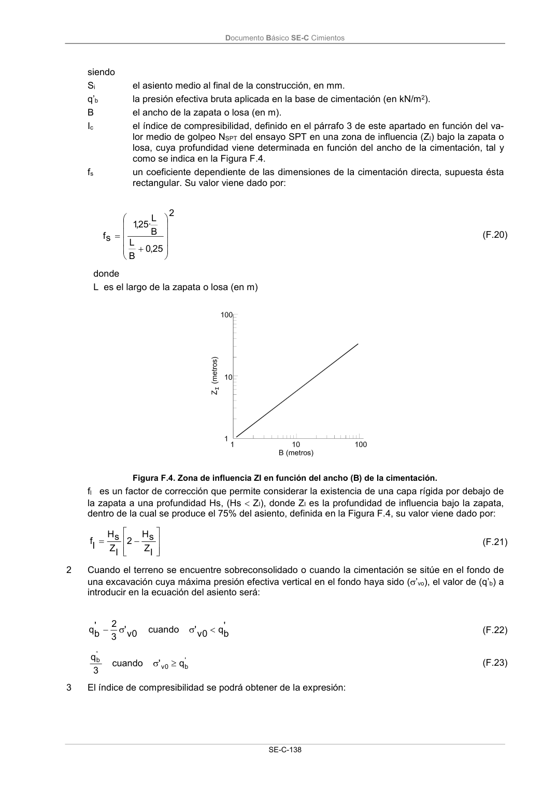

DB-SE-C Cimientos · edición 2019-12-20 · capa oficial
Documento DB-SE-C-oficial · SHA-256 del PDF a71133f4b0dca253e45ea3071c70f2a512354bcc5cd841bf89b1a502f567ac5e
Página física 143 de 165.
Copia fiel del PDF fuente · Fuente oficial
Ficha de la disposición en la fuente oficial
Formato: Texto de la página (Markdown)
Documento Básico SE-C Cimientos
SE-C-138
siendo
Si
el asiento medio al final de la construcción, en mm.
q’b
la presión efectiva bruta aplicada en la base de cimentación (en kN/m2).
B
el ancho de la zapata o losa (en m).
Ic
el índice de compresibilidad, definido en el párrafo 3 de este apartado en función del va-
lor medio de golpeo NSPT del ensayo SPT en una zona de influencia (ZI) bajo la zapata o
losa, cuya profundidad viene determinada en función del ancho de la cimentación, tal y
como se indica en la Figura F.4.
fs
un coeficiente dependiente de las dimensiones de la cimentación directa, supuesta ésta
rectangular. Su valor viene dado por:
2
25
,0
B
L
B
L
·
25
,1
s
f
(F.20)
donde
L es el largo de la zapata o losa (en m)
Figura F.4. Zona de influencia ZI en función del ancho (B) de la cimentación.
fl es un factor de corrección que permite considerar la existencia de una capa rígida por debajo de
la zapata a una profundidad Hs, (Hs ZI), donde ZI es la profundidad de influencia bajo la zapata,
dentro de la cual se produce el 75% del asiento, definida en la Figura F.4, su valor viene dado por:
I
Z
s
H
2
I
Z
s
H
If
(F.21)
2
Cuando el terreno se encuentre sobreconsolidado o cuando la cimentación se sitúe en el fondo de
una excavación cuya máxima presión efectiva vertical en el fondo haya sido (’vo), el valor de (q’b) a
introducir en la ecuación del asiento será:
'
b
q
0
v'
cuando
0
v'
3
2
'
b
q
(F.22)
'
b
0
v
'
b
q
'
cuando
3
q
(F.23)
3
El índice de compresibilidad se podrá obtener de la expresión:
